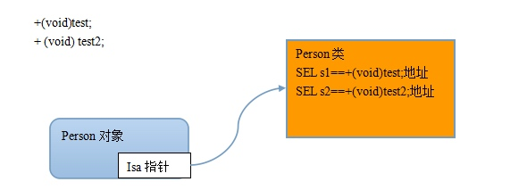

一、description方法
Description方法包括类方法和对象方法。（NSObject类所包含）
（一）基本知
- description（对象方法）
使用NSLog和@%输出某个对象时，会调用对象的description方法，并拿到返回值进行输出。
+ description（类方法）
使用NSLog和@%输出某个对象时，会调用类对象的description方法，并拿到返回值进行输出，把整个对象一次性打印出来，打印对象使用%@。
使用@%打印对象如（“@%”,P）默认打印输出为<类名：内存地址]] >，虽然字符串也是对象，但字符串在使用@%打印时情况特殊。
// Person 类的声明
@interface Person : NSObject
// 两个成员变量
@property (nonatomic, assign) int age;
@property (nonatomic, strong) NSString *name;
@end
/// Person类的实现
@implementation Person
@end
Person *p = [[Person alloc] init];
// 点语法 本质是调用 set 和 get 方法
p.age = 10;
p.name = @"小明";
// 直接用 NSLog 和 %@ 打印对象
NSLog(@"%@",p);
// 打印结果
2016-07-30 18:40:53.937 test[1728:627451] <Person: 0x7fdf8a41e0b0>
那么应该怎么实现打印对象的所有属性呢？在类的实现中重写description方法。
（二）实现打印对象的所有属性
// Person 类的声明
@interface Person : NSObject
// 两个成员变量
@property (nonatomic, assign) int age;
@property (nonatomic, strong) NSString *name;
@end
/// Person类的实现
@implementation Person
- (NSString *)description
{
return [NSString stringWithFormat:@"age=%d, name=%@", _age,_name];
}
@end
Person *p = [[Person alloc] init];
// 点语法 本质是调用 set 和 get 方法
p.age = 10;
p.name = @"小明";
// 直接用 NSLog 和 %@ 打印对象
NSLog(@"%@",p);
// 获取Person的“类对象”
Class c = [Person class];
NSLog(@"%@",c);
// 打印结果
2016-07-30 18:47:41.546 test[1795:650822] age=10, name=小明
2016-07-30 18:47:41.546 test[1795:650822] Person
（三）区别
+ description 决定了类对象的输出结果，即类本身
- description 方法决定了实例对象的输出结果，即Person创建的对象。
（四）打印相关补充
// 1. 打印对象地址
Person *p = [[Person alloc] init];
NSLog(@"%@",p);
// 2. 打印当前代码行号
NSLog(@"%d", __LINE__);
// 3. 打印当前文件路径
NSLog(@"%s", __FILE__);
// 4. 打印所属的方法或函数名
NSLog(@"%s", __func__);
// 打印结果
2016-07-30 18:52:14.556 test[1857:670721] age=0, name=(null)
2016-07-30 18:52:14.556 test[1857:670721] 29
2016-07-30 18:52:14.557 test[1857:670721] /Users/kangan/Desktop/test/test/ViewController.m
2016-07-30 18:52:14.557 test[1857:670721] -[ViewController viewDidLoad]
二、SEL
SEL:全称Selector 表示方法的存储位置。
方法在内存中是怎么存储的？

Person *p=[[Person alloc] init];
[p test];
寻找方法的过程：
- 首先把test这个方法名包装成sel类型的数据；
- 根据SEL数据找到对应的方法地址；
- 根据方法地址调用相应的方法。
- 注意:在这个操作过程中有缓存，第一次找的时候是一个一个的找，非常耗性能，之后再用到的时候就直接使用。
关于_cmd:每个方法的内部都有一个-cmd,代表着当前方法。
注意：SEL其实是对方法的一种包装，将方法包装成一个SEL类型的数据，去寻找对应的方法地址，找到方法地址后就可以调用方法。这些都是运行时特性，发消息就是发送SEL，然后根据SEL找到地址，调用方法。